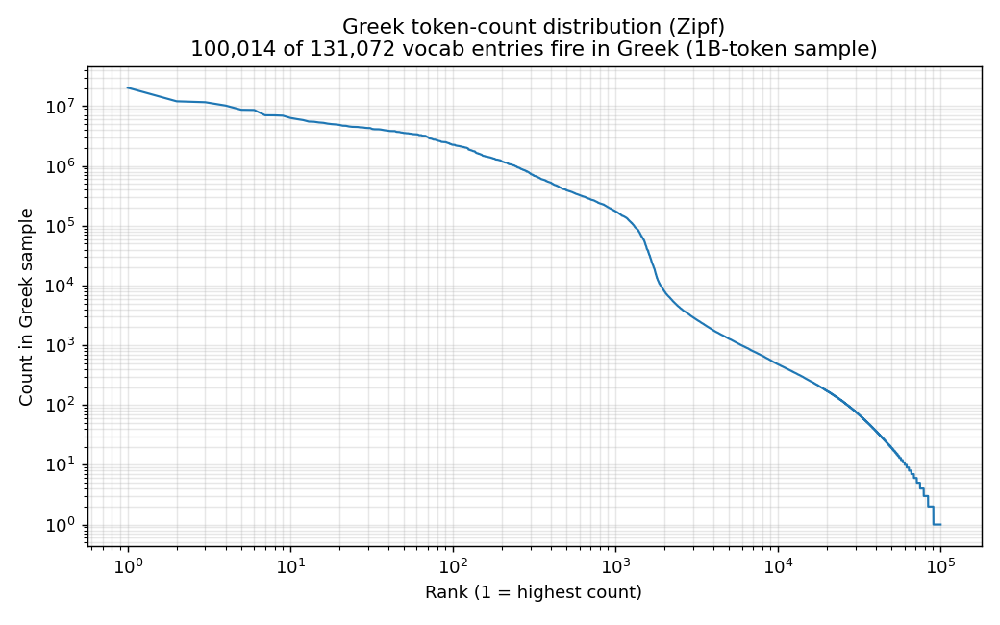
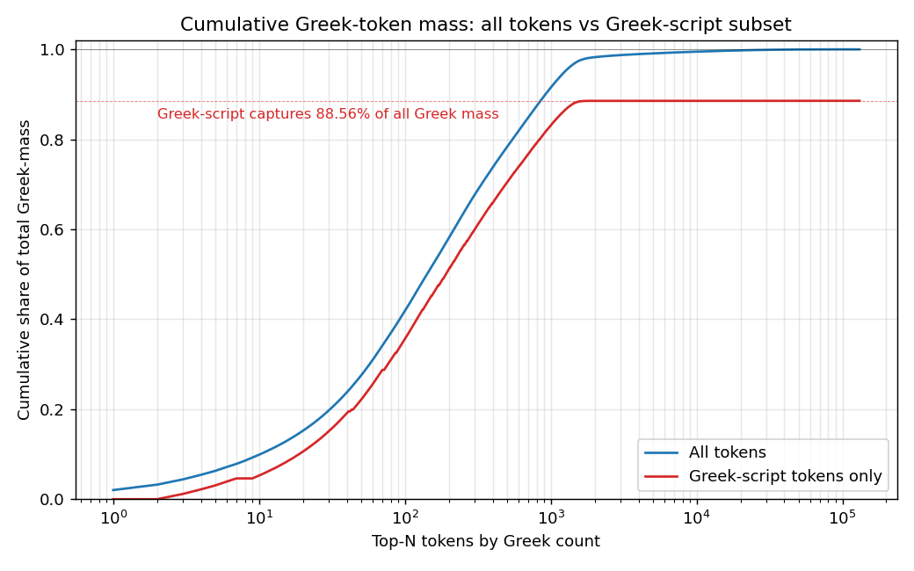
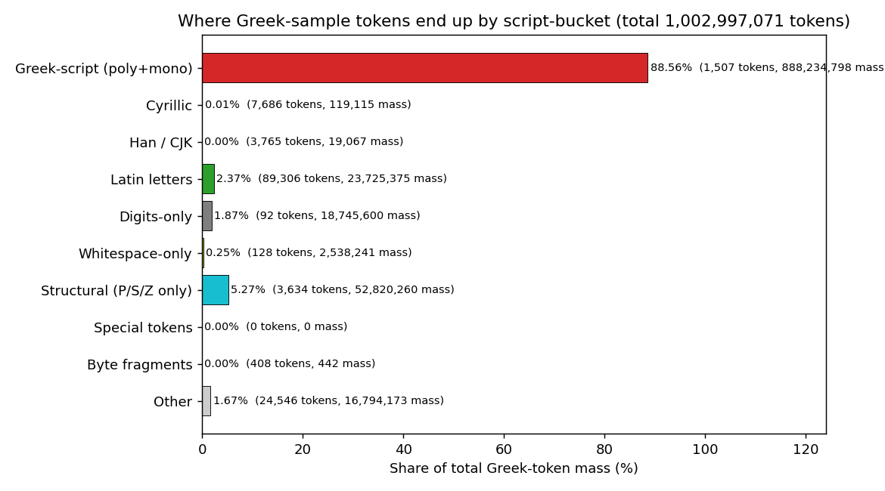
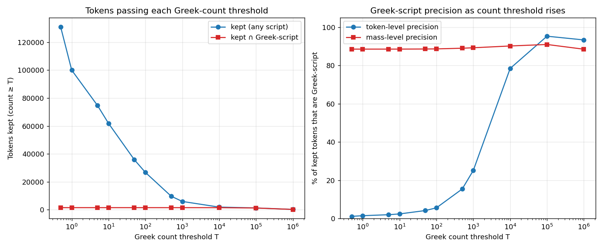

Trust the source dataset's per-language partition as the language label
(FineWeb-2 uses GlotLID v3, the same label Apertus's pipeline trusted).
Stream documents, tokenise with the Apertus tokeniser, increment a
per-language int64 histogram of length 131 072 via np.bincount.
Stop when the per-language cumulative reaches 10⁹ tokens.
Workers w0–w7 partition the 1 933 canonical keys by SHA-1 modulo 8, giving 208–263 keys per worker. Sources used, in priority: FineWeb-2-HQ → FineWeb-2 → Clean-Wikipedia → EuroParl → ParaDocs → FineWeb-Edu → FineWeb-HQ → DCLM-Edu. Pre-computed file listings (31 750 paths, 1.25 MB JSON) shipped with each worker to avoid the 1 000 req / 5 min Hugging Face rate limit.
Final artefacts under outputs/:
a (1933 × 131072) int64 matrix,
per-key metadata, and a 131 072-row token-features table
with twenty script flags. Deliberately not produced:
primary-language, confidence, top-K signature, entropy. Those
belong downstream, after we have looked.
Of 131 072 vocabulary entries, 89 266 contain at least one Latin letter — the script of English and ~14 of the HQ-20 languages and most of the world's web tail. Greek, Cyrillic, Han, Arabic, and the other major scripts together claim some 22 000 entries; the residue is digits, punctuation, byte-fragments, and special-token slots.
Most of the world's languages live in the 10⁵–10⁶ band: real text exists, but not enough for a clean tokenisation portrait.
Five Greek-script canonical keys, of which one — ell_Grek — is the modern Greek mass-bearer. The others are pointed-script and minority Greek-script variants.


Greek-script tokens carry 88.56 % of the Greek mass, and 1,504 of the 1,507 fire at least once.Plate II · σύνοψις

Ranks i–xxi from the full tabulation
tables/top200_greek_script.tsv; ranks xxii–xxx
estimated from the same table beyond column-shown rows. Single-letter entries
(ε, ί, ά) are byte-level BPE merges, not standalone words.
One token is not quite ordinary. U+FFFD — the Unicode replacement character — fires 927 670 times. Somewhere in the Greek slice of FineWeb-2-HQ, an encoding has gone slightly wrong. The sample is mostly clean; this is the only audible static.

These tokens are not waste. They would fire on technical Greek text — medical leaflets, lab reports, dosage labels — that the FineWeb-2-HQ pipeline filters out. The vocabulary inherited from Mistral-Nemo is broader than the corpus Apertus consumed.